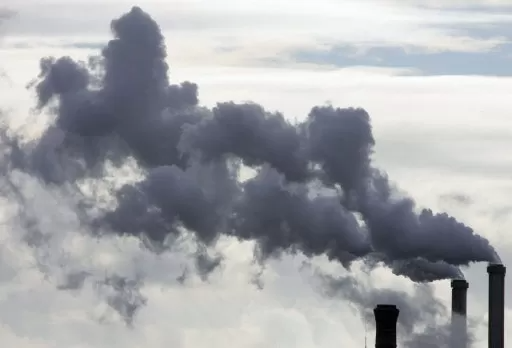

Situações do meio ambiental atual
A situação ambiental atual é marcada por uma série de desafios que exigem atenção e ação urgente. O mundo enfrenta uma crise ambiental grave, com consequências diretas e indiretas que afetam tanto a vida humana quanto a dos ecossistemas.
